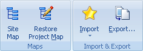
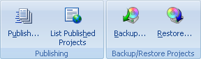

Используйте вкладку Сервис для доступа к полезным дополнениям Offline Explorer Pro.

Обзор - Содержит список внешних браузеров для просмотра загруженных Проектов или некоторых файлов из карты Проекта.
Просмотр в & Править в - Содержит список внешних инструментов для просмотра и правки загруженных файлов из карты Проекта. Вы можете задать список инструментов в диалоге Настройки | раздел Инструменты.
Извлечение данных - обработка загруженных файлов для извлечения данных, преобразования текста, выполнения других действий с использованием внешнего инструмента TextPipe.
Печать - Печать всех загруженных страниц выбранного Проекта (только в версиях Pro и Enterprise).

Шаблоны
Шаблоны - это специальные Проекты, которые могут быть использованы для более простого создания ваших задач загрузки. У вас может быть столько много шаблонов, сколько вы хотите. Используйте диалог Шаблоны для их просмотра. Если вы создаёте новый, основанный на некотором шаблоне Проект, то Проект будет иметь все параметры настройки шаблона, кроме поля URL.
Вы можете использовать шаблоны для создания Проектов с кнопками Новый Проект и Вставить на Ленте, вкладка Главная.
Создать шаблон - Открывает диалог свойства Проекта для добавления нового шаблона в диалог Шаблоны.
Шаблоны - Открывает диалог Шаблоны для управления шаблонами.
Применить шаблон - Изменяет параметры настройки Проекта согласно одному из шаблонов. Вы можете выбрать желаемый шаблон и какие его части должны применяться.

Карта сайта - Начинает загрузку выбранного Проекта. Однако загруженные файлы не сохраняются на диск. Они используются только для создания структурную карту сайта.
Восстановление карты проекта - это инструмент для восстановления повреждённой или отсутствующей карты выбранного Проекта. Проверяются загруженные на диск файлы и добавляются в карту те, которые соответствуют настройкам Проекта (Уровень, URL/Фильтры файлов, и так далее).
Экспорт - Копирует все загруженные файлы для выбранной папки или Проекта в указанный каталог. Файлы со специальной информацией (descr.wd3, *.primary) не копируются. Это также добавляет стандартные расширения к копируемым файлам или переименовывают их, используя формат имён файлов 8+3 или Joilet. Другие особенности включают создание HTML Help, ZIP, EXE, MHT-файлов и передача на FTP.
Используйте Ленту, вкладка Главная | Импорт для добавления новых Проектов, получая URL из Избранного разных web-браузеров, закладок и Hot lists.

Публикация - Добавление вашего Проекта в коллекцию опубликованных пользовательских шаблонов на сайте MetaProducts.com.
Опубликованные проекты - Просмотр списка опубликованных пользователями шаблонов Проектов.
Сохранение/Восстановление проектов - Сохраняет в отдельный файл или восстанавливает Проект, включая настройки, карту и все загруженные файлы. Конечный файл .boe может использоваться для передачи Проекта на другой компьютер.